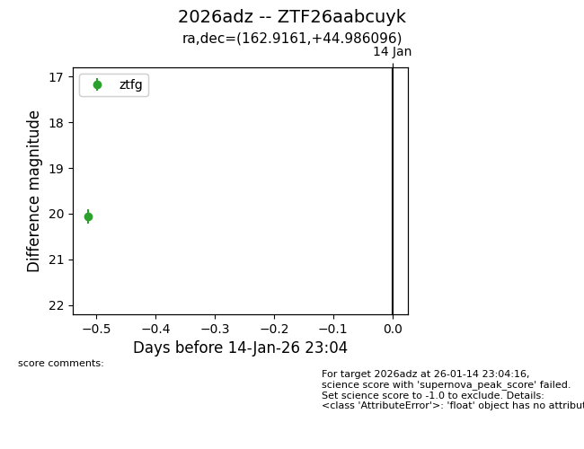
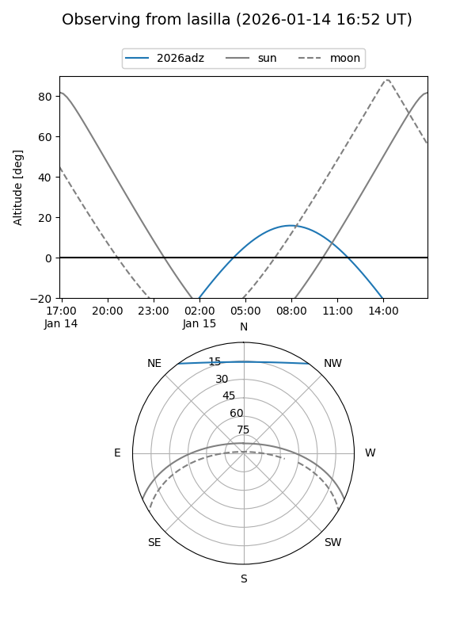
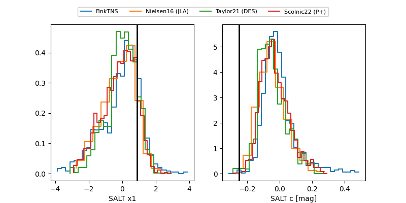

2026adz
Target 2026adz at 2026-01-20 21:21
Aliases and brokers:
FINK: link
Lasair: link
ALeRCE: link
TNS: link
YSE: link
alt names
ZTF26aabcuyk (ztf,fink_ztf)
2026adz (tns,yse)
Coordinates:
equatorial (ra, dec) = 162.9161,+44.98610
equatorial (HMS+DMS) = 10:51:39.86,+44:59:09.94
galactic (l, b) = (168.2033,+60.20376)
Flags:
Photometry:
last ztfg=19.76, ztfr=19.86
3 ztfg, 1 ztfr detections
Lightcurve

Visibility


Additional plots
